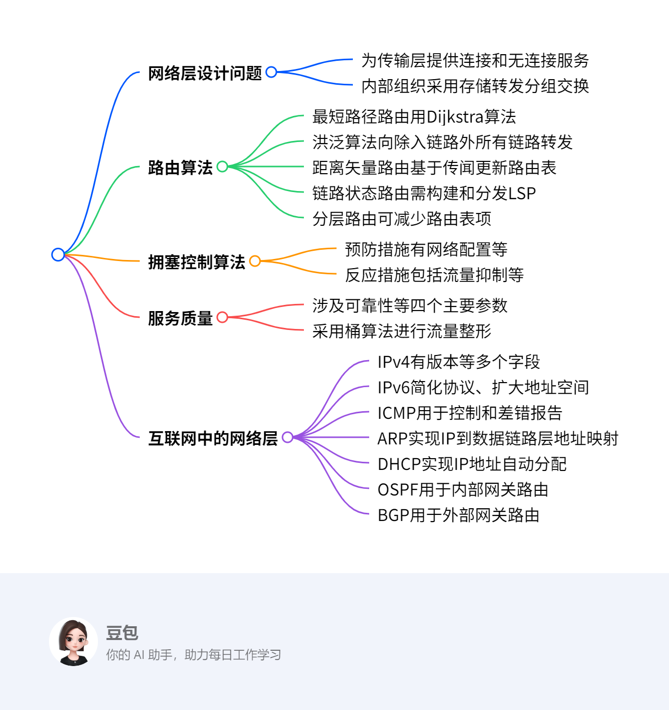

The Network Layer¶
总览¶
一段话总结¶
网络层是负责端到端传输的底层，其设计问题包括为传输层提供的服务、内部组织等，有数据报和虚电路两种服务类型。路由算法决定数据包传输路径，分为非自适应和自适应算法，如最短路径路由、洪泛、距离矢量路由、链路状态路由和分层路由等。同时，网络层还涉及拥塞控制算法、服务质量保障、网络互联以及互联网中的网络层（如IPv4、IPv6、ICMP、ARP、DHCP、OSPF、BGP等），这些技术共同保障网络高效、稳定运行。
¶
详细总结¶
- 网络层设计问题
- 服务类型：为传输层提供两类服务，连接导向服务（虚电路） 和 无连接服务（数据报）。虚电路在通信前需建立路径，数据沿既定路径传输；数据报则每个数据包独立路由。
- 内部组织：采用存储转发分组交换 方式，路由器负责存储和转发数据包。
- 路由算法
- 分类：分为非自适应算法（静态路由） 和 自适应算法。非自适应算法路由决策不依赖当前流量和拓扑，预先计算并下载路由；自适应算法根据拓扑和流量变化调整路由决策。
- 具体算法
- 最短路径路由：构建子网加权有向图，用Dijkstra算法 计算最短路径。
- 洪泛：将数据包转发到除入链路外的所有链路，通过设置跳数计数器、序列号等技术抑制洪泛。
- 距离矢量路由：每个路由器维护路由表，通过与邻居交换信息更新，如RIP协议每30秒周期性更新。存在计数到无穷问题。
- 链路状态路由：路由器需发现邻居、测量链路延迟、构建和分发链路状态分组（LSP），并计算最短路径。
- 分层路由：将网络划分为区域和簇，减少路由表项数量。
- 拥塞控制算法
- 预防措施：包括网络配置、流量感知路由、准入控制、流量抑制 等。流量感知路由根据链路负载设置权重；准入控制在网络能承载时建立新虚电路。
- 反应措施：如负载丢弃，当路由器拥塞时丢弃数据包，RED（随机早期检测）在队列长度超阈值时采取行动。
- 服务质量
- 参数：涉及可靠性、延迟、抖动、带宽 四个主要参数。
- 流量整形与监管：采用漏桶算法 和 令牌桶算法，令牌桶算法可调节数据传输速率和突发度。
- 互联网中的网络层
- IPv4：报头包含版本、IHL等多个字段，如版本字段占4位，IHL字段表示报头长度，总长度字段最大为65535字节。
- IPv6：扩大地址空间至128位，简化协议，固定报头长度，去除IHL和协议字段，引入流标签等。
- ICMP：封装在IP数据包中，用于控制和差错报告，如目的不可达、时间超时等。
- ARP：实现IP地址到数据链路层地址的动态映射，通过广播请求获取对应地址。
- DHCP：用于IP地址自动分配，通过四次握手完成地址分配过程。
- OSPF：内部网关协议，支持多种距离度量，动态适应拓扑变化，划分区域减少流量。
- BGP：外部网关协议，根据路由策略选择最佳路由，考虑政治、安全等因素。
关键问题¶
- 数据报网络和虚电路网络在路由决策上有何不同？
- 数据报网络中，每个数据包独立进行路由决策，每次决策都需根据当前网络状况选择最佳路径；而虚电路网络仅在建立虚电路时进行路由决策，后续数据沿已建立的路径传输。
- 距离矢量路由算法中的计数到无穷问题是如何产生的，如何解决？
- 当网络中链路状态发生变化，如链路断开，距离矢量路由算法可能因信息更新不及时，导致路由器不断更新路由表中到故障网络的距离，使其不断增大直至无穷。可通过设置最大跳数（如RIP协议中设置为16）、水平分割（路由器从某个接口接收到路由信息后，不再从该接口将此路由信息发送回邻居路由器）等方法缓解。
- IPv6相比IPv4有哪些优势？
- 地址空间：IPv6地址空间为128位，相比IPv4的32位，极大地增加了地址数量，可满足未来网络设备增长需求。
- 协议简化：IPv6简化了报头，去除部分字段，使路由器处理数据包速度更快。
- 服务质量支持：IPv6更注重服务类型，能更好地满足实时数据传输需求。
- 安全性增强：增加了认证和加密扩展头，提升网络安全性。
Network Layer Design Issues¶
Issues¶
该内容主要介绍了网络层设计问题，涵盖向传输层提供的服务以及网络层内部组织，具体如下：
- 网络层设计问题分类：网络层设计问题主要包含两个方面，分别是向传输层提供的服务以及网络层的内部组织，其中网络层内部采用存储转发分组交换方式。
- 向传输层提供的服务：
- 设计目标：传输层应与路由器的数量、类型和拓扑结构相隔离，使其不受这些因素影响；同时，提供给传输层的网络地址要采用统一的编号方案，保证在局域网（LANs）和广域网（WANs）中都能通用。
- 服务类型：主要有两类。面向连接服务（虚电路） ，在数据传输前需建立一条逻辑连接，数据沿着该连接进行有序传输；无连接服务（数据报） ，每个数据报独立传输，它们之间没有固定的顺序和连接关系 。
Datagram¶

Virtual Circuit¶
这两张图对比展示了数据报子网和虚电路子网的工作原理：
- 上方图（数据报子网示例）：
- 主机A向主机B和主机C发送分组。从A发出的分组（标记为B.1、B.2、B.3 以及C.1、C.2、C.3 ） 各自独立传输。
- 这些分组在网络（用云状图表示）中分别寻找路径，没有固定的传输路径依赖 ，每个分组都单独进行路由决策，体现了数据报子网中分组独立路由的特点 。
- 下方图（虚电路子网示例） ：
- 定义了两条虚电路vc1和vc2 。vc1的路径是A - 1 - 2 - 4 - B ，vc2的路径是A - 1 - 3 - 5 - C 。
- 一旦虚电路建立，主机A向主机B、C发送的数据就会沿着预先确定好的虚电路路径传输 。比如发往B的数据会固定沿着vc1路径走，发往C的数据会固定沿着vc2路径走 ，体现了虚电路子网在建立连接后按固定路径传输数据的特性。
| 比较项目 | 数据报子网（Datagram subnet） | 虚电路子网（Virtual - circuit subnet） |
|---|---|---|
| 电路建立（Circuit setup） | 不需要（Not needed） | 需要（Required） |
| 编址（Addressing） | 每个分组包含完整的源地址和目的地址（Each packet contains the full source and destination address） | 每个分组包含一个短的虚电路号（Each packet contains a short VC number） |
| 状态信息（State information） | 路由器不持有关于连接的状态信息（Routers do not hold state information about connections） | 每条虚电路在路由器中需要占用连接表空间（Each VC requires router table space per connection） |
| 路由（Routing） | 每个分组独立路由（Each packet is routed independently） | 虚电路建立时选择路由，所有分组都沿着该路由传输（Route chosen when VC is set up; all packets follow it） |
| 路由器故障的影响（Effect of router failures） | 除了在故障期间丢失的分组外，无其他影响（None, except for packets lost during the crash） | 所有经过故障路由器的虚电路都将终止（All VCs that passed through the failed router are terminated） |
| 服务质量（Quality of service） | 难以保障（Difficult） | 如果能为每条虚电路预先分配足够资源则较容易保障（Easy if enough resources can be allocated in advance for each VC） |
| 拥塞控制（Congestion control） | 难以实现（Difficult） | 如果能为每条虚电路预先分配足够资源则较容易实现（Easy if enough resources can be allocated in advance for each VC） |
Routing Algorithms¶
该部分内容围绕路由算法展开，主要涵盖以下方面： - 路由算法的职责 - 数据包转发路径决策：负责决定输入数据包应从哪个输出线路传输。 - 虚电路子网：仅在建立新虚电路时进行路由决策，后续数据包沿已建立的路径传输，即会话路由。 - 数据报子网：因最佳路由可能变化，对每个到达的数据包都要重新进行路由决策。 - 区分转发与路由：虽未详细阐述二者差异，但强调了路由算法在其中的作用。
-
路由算法的目标
- 正确性：确保路由决策准确，使数据包能正确传输到目的地。
- 简单性：算法应简洁，便于实现、维护和理解。
- 鲁棒性：能在网络出现故障、拥塞等异常情况下正常工作。
- 稳定性：网络拓扑结构变化后能迅速收敛，重新计算并确定合适路由。
- 公平性：公平分配网络资源，避免某些节点或链路过度占用资源。
- 效率性：
- 最小化数据包平均延迟：减少数据包在网络中传输的时间。
- 最大化网络总吞吐量：提高网络单位时间内传输的数据量。
-
路由算法的分类
- 非自适应算法（静态路由）：路由决策不依据当前流量和拓扑的测量或估计，路由路径在网络启动前提前离线计算好并下载到路由器。
- 自适应算法：能根据拓扑结构和流量变化调整路由决策，以适应网络动态变化。
-
最优性原理
- 若路由器J在路由器I到路由器K的最优路径上，那么从J到K的最优路径也在同一路由上。若存在比r2更好的从J到K的路径rx ，将其与r1连接会得到比r1 + r2更优的从I到K的路径，这与r1 + r2是最优路径矛盾。

- 若路由器J在路由器I到路由器K的最优路径上，那么从J到K的最优路径也在同一路由上。若存在比r2更好的从J到K的路径rx ，将其与r1连接会得到比r1 + r2更优的从I到K的路径，这与r1 + r2是最优路径矛盾。
-
汇聚树
- 概念：从所有源节点到目的节点的最优路由构成以目的节点为根的树，无环路，保证数据包在有限跳数内送达。
- 算法目标：发现并利用所有路由器的汇聚树，但不同路由器对当前拓扑结构的认知可能存在差异。
Shortest Path Routing¶
该部分内容主要介绍了最短路径路由，具体如下：
构建子网图¶
- 图的构成：构建一个子网的加权有向图 。其中节点（Nodes）代表路由器 ，弧（Arcs）代表通信线路 。
- 权重（Weight）设定 ：
- 考量因素多样：权重可以是跳数（Hops） ；也可以是地理距离（单位为千米） ；还可以是平均排队和传输延迟。延迟通过每小时测试，使用标准测试分组确定。此外，权重是距离、带宽、平均流量、通信成本、平均队列长度、测量延迟等因素的函数 。
采用的算法¶
- Dijkstra算法 ：用于寻找给定的一对路由器之间的最短路径 。 借助该算法，依据构建的加权有向图及设定的权重，可计算出路由器间的最短路径，从而为网络数据包的路由选择提供依据 。
Flooding¶
该部分内容围绕洪泛（Flooding）展开，具体如下：
洪泛基本原理¶
- 特点：无需网络信息 。将接收到的数据包（除从入站链路接收的）转发到其他所有链路。最终会有若干副本到达目的地。
抑制洪泛的技术¶
- 存在问题：会产生大量重复数据包，若不采取措施抑制，数据包数量将趋于无穷。
- 解决措施：
- 跳数计数器：每个数据包头部含跳数计数器 ，每经过一跳计数器减1 ，减为0时丢弃数据包。发送方初始化跳数计数器为源到目的地路径长度或子网直径。
- 序列号：源在每个数据包中放入序列号 ，每个路由器记录每个源的最大序列号，用于识别已接收过的数据包。
- 选择性洪泛：路由器在数据库记录接收到的数据项，每个数据项有版本号，仅对新数据项进行洪泛。
洪泛的属性¶
- 路由尝试全面：尝试所有可能的路由，健壮性强 。
- 最短路径可达：至少有一个数据包会采用最小跳数路由。
- 节点遍历完全：所有节点都会被访问，在分发路由信息方面很有用。
Distance Vector Routing¶
该部分内容主要介绍距离矢量路由（Distance Vector Routing），具体如下：
基本原理¶
- 基于传闻路由：也叫Routed by rumor 。
- 路由表维护：每个路由器维护一张表，包含目的（Destination）、距离（Cost）、接口（Interface）、下一跳（Next Hop） 信息。距离可以是跳数、时延（毫秒）等。
- 信息交换更新：
- 发送路由信息：向邻居发送（目的地，距离）信息。方式有周期性更新（如RIP协议每30秒更新一次 ）和触发更新（表变化时更新） 。
- 接收路由信息：收到更好路由时更新本地表（增加和修改表项 ），刷新现有路由。若表项超时（如RIP 180秒 ）则删除。
示例说明¶
通过多个示例展示路由表更新过程： - Example 1：展示从A、I、H、K输入信息后，J的新路由表。 - Example 2：详细呈现多轮迭代过程中各节点路由表变化，如节点A、B、C、D在不同迭代阶段对目的地B、C、D的距离和下一跳设置变化，通过计算D(A, D) = D(A, C) + D(C,D) 等公式更新距离值。
存在问题¶
- 计数到无穷问题（Count - to - infinity Problem） ：当网络链路状态变化（如链路断开 ），路由器可能因信息更新不及时，不断更新到故障网络的距离，使其增大直至无穷。RIP协议将无穷大设为16 。
- 算法固有问题：当X告知Y有到某处的路径时，Y无法确定自己是否在该路径上。
相关协议¶
- 距离矢量路由协议：如RIP（Routing Information Protocol ）、Cisco EIGRP（Enhanced Interior Gateway Routing Protocol ） 。
- 路径矢量路由协议：如BGP - 4（Border Gateway Protocol ）、IDRP（Inter - domain Routing Protocol ） 。
Link State Routing¶
该部分内容主要围绕链路状态路由（Link State Routing）展开，详细介绍了其工作原理、具体步骤及相关示例，具体总结如下：
- 链路状态路由的工作步骤
- 发现邻居并获取地址：路由器通过发送HELLO包来发现邻居。在广播网络中，通过广播HELLO包发现邻居；在非广播式网络中，通过单播HELLO包监测已配置邻居的状态。邻居收到后会回复自身信息，且其名称（网络地址或路由ID）必须全球唯一。当多个路由器通过局域网或其他多接入网络连接时，会简化拓扑结构。
- 测量链路成本：测量到每个邻居的延迟，可通过测量往返时间（使用ECHO包）、带宽等方式。但在测量延迟时，是否考虑负载（流量）是个问题，因为考虑负载可能导致路由表振荡，引发不稳定路由和其他潜在问题。
- 构建链路状态分组（LSP）：路由器定期（例如每半小时）或在发生重大事件（如链路或邻居状态改变）时构建LSP，LSP包含路由器刚获取的与邻居相关的连接信息。
- 可靠分发LSP：通过洪泛算法将LSP分发到所有其他路由器，确保所有路由器拥有相同的路由信息和拓扑结构图。为防止错误，所有LSP都需被确认。LSP包含序列号和年龄（Age）字段，序列号用于判断LSP的新旧、是否重复或过时；Age字段用于处理路由器故障、更改路由器ID或删除LSP等情况。
- 计算新路由：路由器收集到完整的LSP集后，构建整个网络的图，图中每条链路会从两个方向表示。然后，在本地运行Dijkstra算法计算到所有可能目的地的最短路径，并将结果安装到路由表中。
- 链路状态路由的示例：如IS - IS（Intermediate System - Intermediate System），可支持多种网络层协议，应用于DECnet、ISO CLNP、IP、AppleTalk、Novell NLSP（IPX）等网络；还有OSPF（Open Shortest Path First），它是在IS - IS之后设计的，专门用于IP网络 。
Hierarchical Routing¶
这部分内容主要介绍了分层路由（Hierarchical Routing），通过对比不同情况下路由表的条目数量，突出了分层路由在减少路由表规模方面的优势，具体如下： 1. 分层路由的概念：将网络划分为不同层次结构，如区域、簇等，以简化路由过程和减少路由表大小。 2. 具体案例分析：以一个有720个路由器的子网为例： - 无分层情况：每个路由器的路由表需要包含720个条目，这意味着每个路由器要维护整个子网所有路由器的路由信息，数据量庞大，管理和查找效率低。 - 两层分层情况：子网被划分为24个区域，每个区域有30个路由器。此时，每个路由器的路由表包含30个本地条目（即本区域内路由器的路由信息 ）和23个远程条目（其他区域路由器的路由信息 ），相比无分层情况，路由表条目数量大幅减少。 - 三层分层情况：采用三层分层结构，有8个簇，每个簇包含9个区域，每个区域有10个路由器。这种情况下，每个路由器的路由表包含10个本地路由器条目（本区域内 ）、8个到同一簇内其他区域的条目 以及7个到其他簇的条目，路由表条目进一步减少到25个。
Congestion Control Algorithms¶
该部分内容主要介绍了拥塞控制算法，具体内容如下：
- 拥塞现象及原因：当网络流量过大时会引发拥塞，导致性能急剧下降。突发流量、缓冲队列长度（过长或过短）以及慢CPU导致的转发操作缓慢等是造成拥塞的次要因素。
- 拥塞控制与流量控制的区别：拥塞控制是一个全局问题，旨在解决网络整体的拥塞情况；而流量控制主要确保发送方发送数据的速度不超过接收方的处理能力。
- 拥塞控制方法
- 预防措施：
- 网络配置：从网络整体规划角度预防拥塞。
- 流量感知路由：普通路由方案使用固定链路权重，仅适应拓扑变化；流量感知路由则将链路权重设置为链路带宽、传播延迟以及测量负载或平均排队延迟的函数。但如果只考虑带宽和传播延迟而忽略负载，可能导致路由表剧烈振荡，引发不稳定路由等问题，目前互联网中的路由协议通常不依据负载调整路由。
- 准入控制：广泛应用于虚电路网络，只有在网络能承载新增流量且不会导致拥塞时，才建立新的虚电路。该方法可与流量感知路由结合，在建立虚电路时考虑避开流量热点的路由。流量可通过漏桶或令牌桶算法描述其速率和形状。
- 流量抑制：当网络接近拥塞时，通知发送方降低传输速率。路由器通过监测输出链路利用率、内部排队数据包的缓冲情况和数据包丢失数量等指标来判断拥塞是否临近，使用指数加权移动平均（EWMA）等方法计算相关指标。路由器通过发送抑制包（如Choke packets）或使用显式拥塞通知（ECN）向发送方反馈拥塞信息。Choke packets是路由器选择一个拥塞的数据包，向源发送抑制包（如Internet中的SOURCEQUENCH消息）；ECN是路由器在转发数据包时，通过设置包头中的一位来标记数据包处于拥塞状态，目的地方收到数据包后，在回复消息中告知发送方，发送方据此降低传输速率。
- 反应措施：
- 负载丢弃：当路由器被数据包淹没时，直接丢弃数据包。丢弃策略包括随机丢弃、根据数据包优先级丢弃等。携带路由信息的数据包比普通数据数据包更重要，因为它们用于建立路由；低优先级数据包发送成本较低。此外，允许主机超出协议规定的流量限制，但超出部分需标记为低优先级。
- 随机早期检测（RED）：在拥塞情况恶化前丢弃数据包，当某条线路上的平均队列长度超过阈值（即出现拥塞）时采取行动。路由器可以通过发送抑制包或直接丢弃选定的数据包（隐式拥塞通知机制）来告知源端拥塞问题。源端在收到数据包丢失的反馈后，会降低传输速率，前提是源端会对数据包丢失做出减速响应。与仅在缓冲区满时才丢弃数据包的路由器相比，RED路由器能提升性能。ECN是更优选择，它能明确地发送拥塞信号；而RED用于主机无法接收显式信号的情况。
- 预防措施：
Quality of Service¶
这部分内容主要介绍了网络服务质量（Quality of Service）相关内容，包括服务质量的主要参数、ATM网络的流量分类、缓冲、流量整形与监管以及令牌桶算法等，具体总结如下：
- 服务质量的主要参数：包含四个主要参数，分别是可靠性（Reliability）、延迟（Delay）、抖动（Jitter）和带宽（Bandwidth），这些参数用于衡量网络服务质量的优劣。
- ATM网络的流量分类：ATM网络依据QoS需求将流量分为四大类。
- 恒定比特率（Constant bit rate），例如电话通信，需要稳定的传输速率来保证通话质量。
- 实时可变比特率（Real-time variable bit rate），如压缩视频会议，虽然传输速率会变化，但需满足实时性要求。
- 非实时可变比特率（Non-real-time variable bit rate），像在互联网上观看电影，对实时性要求相对较低。
- 可用比特率（Available bit rate），例如文件传输，能根据网络可用带宽调整传输速率。
- 缓冲（Buffering）：通过对数据包进行缓冲来平滑输出流，减少数据包传输的波动。
- 流量整形与监管（Traffic Shaping & Policing）
- 问题：主机不规则地发送数据包可能导致网络拥塞。
- 服务级别协议（SLA）：是用户和子网之间的协议。对于用户而言，流量整形（Traffic shaping）可以调节数据传输的平均速率和突发度，使流量更加平滑，从而减少网络拥塞，并帮助运营商履行承诺；对于运营商来说，流量监管（Traffic Policing）是对流量进行监测，超出约定模式的数据包可能会被丢弃或标记为低优先级。
- 桶算法（Bucket Algorithm）：包括漏桶算法和令牌桶算法。令牌桶算法中，涉及令牌桶容量（B）、令牌到达速率（R）、最大输出速率（M）和突发长度（S）等参数。通过公式S = B/(M - R) 可以计算出最大速率突发的持续时间，如当B = 9600KB，M = 125MB/s，R = 25MB/s时，S = 96ms 。